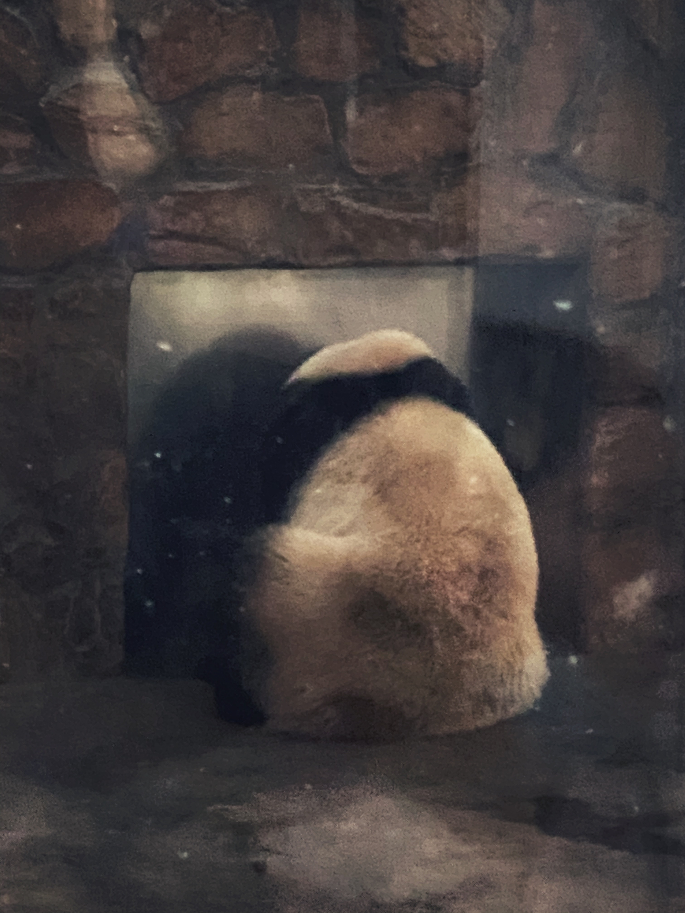

Welcome to My Personal Site
I am a sophomore at the University of Michigan and my major is CS. I enjoy traveling and photography and I have traveled to many countries and regions. I love different cultures, and I like to record different human and natural landscapes with my camera. I have put some of my photos and my thoughts on this website.
Beijing is the capital of China and the largest city in China. It is the center of the country's political, economic, and cultural development. It is the world's largest metropolis.
Below are six photos of the city of Beijing. The first three photos are the city of Beijing from the perspective of the CBD. The following two photos are the city of Beijing from the perspective of the ForbiddenCity. The last photo is the first and biggest Apple Store in China.


Chengdu is the capital of China's Sichuan province, which is famous worldwide for its giant pandas. The following picture was taken by me at the giant panda breeding base
Chongqing is a city next to Sichuan, because of its steep terrain is called the mountain city, this is my shot of Chongqing city rail transit

Tokyo is the capital of Japan, and I was fascinated by its prosperity and ancient culture. This picture was taken in Shinjuku Gyoen.